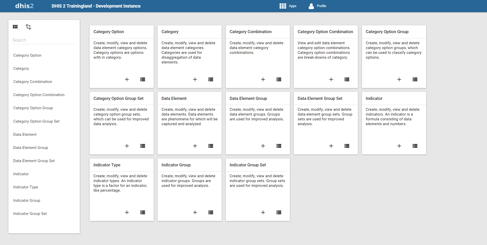

Table of Contents
|  |
In the Data elements section of the Maintenance app, you can manage the following data elements types:
Table 5.1. Data element types in Maintenance app
|
Type |
Available functions |
|---|---|
|
Category option |
Create, modify, view and delete |
|
Category |
Create, modify, view and delete |
|
Category combination |
Create, modify, view and delete |
|
Category option combination | |
|
Category option group set | |
|
Data element |
Create, modify, view and delete |
|
Data element group |
Create, modify, view and delete |
|
Data element group set |
Create, modify, view and delete |